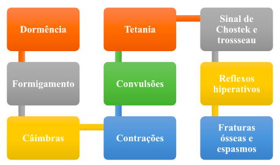
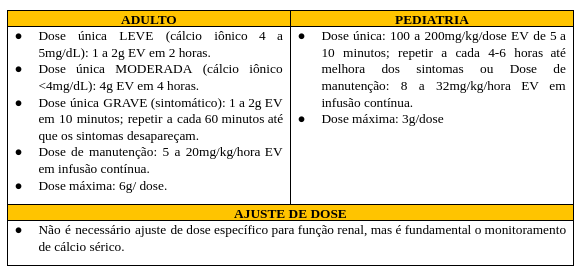
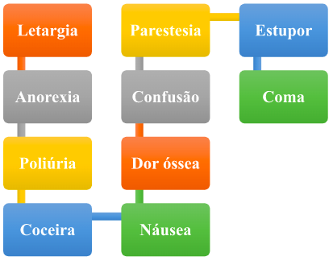
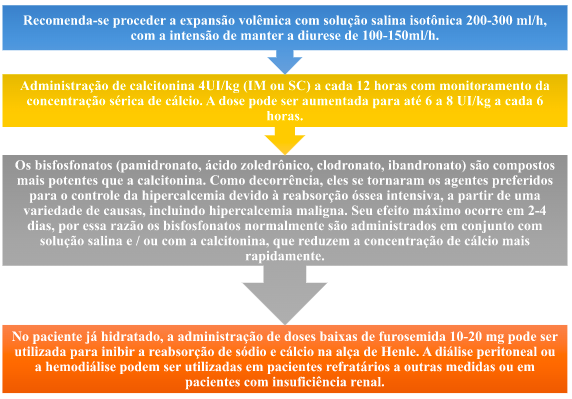

Cálcio – Gluconato de cálcio a 10% e cloreto de cálcio a 10%
Sumário:
- Apresentação da droga
- Gluconato de cálcio a 10%
- Gluconato de cálcio a 10%
- Apresentação
- Indicação
- Dose
- Via de administração
- Preparo/diluição
- Administração
- Estabilidade/Conservação
- Cuidados específicos e monitoramento
- Reações adversos
- Toxicologia
- Contraindicação
- Uso durante a gestação
- Hipocalcemia
- Hipercalcemia
- Gluconato de cálcio a 10% (90 mg de cálcio por ampola de 10 mL);
- Cloreto de cálcio a 10% (272 mg de cálcio por ampola de 10 mL);
- A medicação de escolha é o gluconato de cálcio a 10%.
- Gluconato de Cálcio 10% (100mg/mL) em ampola 10mL (1g/ampola).
- Corresponde a 90mg de cálcio ou 4,65mEq (2,2mmol) de cálcio elementar.
- Alergia ao gluconato de cálcio ou componentes da formulação;
- Hipercalcemia; -hipercalciúria (nível alto e anormal de excreção de cálcio na urina, maior que 4 mg/kg/dia);
- Toxicidade a digitálicos ou suspeita de toxicidade a digoxina.
- Cloreto de Cálcio 10% (100mg/mL) em ampola com 10mL (1g/ampola);
- Corresponde a 273mg de cálcio ou 13,6mEq (6,8mmol) de cálcio elementar por ampola.
- Hipercalcemia
- Toxicidade conhecida ou suspeitada a digoxina;
- TNão é recomendado como tratamento de rotina na parada cardiorrespiratória
- Não é recomendado em neonatos recebendo ceftriaxona.
Apresentação da droga
As soluções disponíveis são:
Gluconato de Cálcio
Apresentação
Indicação
Preparo e administração
Estabilidade / Conservação
Duração de 48 horas em temperatura ambiente.
Situações que exigem atenção especial
Usar com cautela em pacientes que:
Utilizam digitálicos
Pacientes com hiperfosfatemia severa
Insuficiência respiratória ou acidose
Cálculos renais de cálcio
Disfunção renal crônica
Disfunção cardíaca
Doenças associadas com a hipercalcemia
Reações adversas
Contraindicação
Cuidados específicos e monitoramento
Usar com cautela em pacientes que:
Administração endovenosa lenta
Não deve ser administrado via intramuscular ou subcutânea
As injeções de sal de cálcio podem produzir irritação
Deve-se evitar o extravasamento da solução
Toxicologia
Interação medicamentosa
Não deve ser administrado em neonatos em tratamento com ceftriaxona, em virtude do risco de precipitação do sal ceftriaxona-cálcio.
Uso durante a gestação
Categoria C: Não há informações suficientes para avaliar a segurança do medicamento durante a gravidez. O medicamento deve ser administrado apenas se o benefício potencial justificar o risco.

Cloreto de Cálcio 10%
Apresentação
Indicação
Dose
Via de administração/Preparo
Estabilidade / Conservação
Duração de 48 horas em temperatura ambiente.
Cuidados específicos e monitoramento
O gluconato de cálcio EV é preferível ao cloreto de cálcio EV em circunstâncias não emergenciais, em função do potencial de extravasamento ser mais grave com cloreto de que com o cálcio.
Utilizar com cautela em pacientes com hiperfosfatemia, acidose respiratória, insuficiência renal e insuficiência respiratória.
A utilização de cloreto de cálcio pode exacerbar quadros de acidose.
Utilizar com cautela em pacientes com insuficiência renal crônica, em virtude do risco de hipercalcemia.
Reações adversas
Reações adversas
Contraindicação
Uso durante a gestação
Categoria C: Não há estudos suficientes para avaliar a segurança do medicamento durante a gravidez. O medicamento deve ser administrado apenas se o benefício potencial justificar o risco.
Hipocalcemia
Definição
Ocorre quando a concentração de cálcio sérico se encontra abaixo de 4,5 mEq/L.
Causas
Aumento na perda de cálcio
Ingestão reduzida
Níveis altos de fosfato
Hipomagnesemia
Raquitismo
Insuficiência renal
Hipoparatireoidismo
Esteatorreia
Transfusão sanguínea
Sinais e sintomas
Tratamento
Hipercalcemia
Definição
Ocorre quando a concentração de cálcio sérico se encontra acima de 5,5 mEq/L.
Causas
Hiperparatireoidismo
Alguns cânceres
Tireotoxicose
Feocromocitoma
Imobilização
Ingestão excessiva de vitamina D ou de outros medicamentos, tais como lítio, tiazidas e anti-estrógenos.
Sinais e sintomas
Tratamento
Hipocalcemia: O que fazer quando tem pouco cálcio no sangue. https://www.youtube.com/watch?v=EqDbo5o90Vw
Hipercalcemia: O que causa e o que fazer quando o cálcio esta aumentado. https://www.youtube.com/watch?v=wqYQ0thYadA